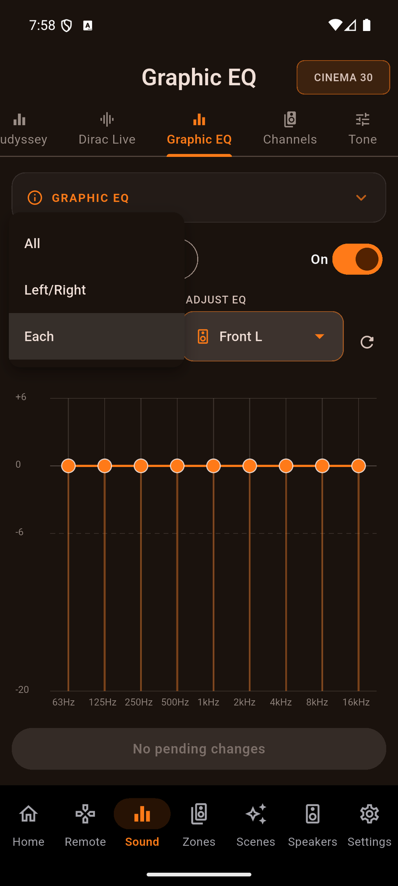
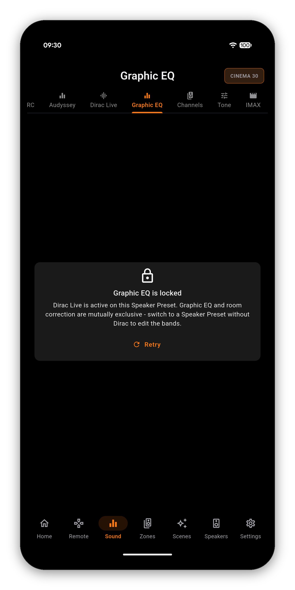

When you run your receiver without Audyssey or Dirac, the manual Graphic EQ is yours to shape - and AVR Maestro gives you the whole thing on your phone: a 9-band curve from 63Hz to 16kHz, -20 to +6 dB, for every speaker, dragged right on the graph and applied live.


Your receiver runs either room correction (Audyssey MultEQ or Dirac Live) or the manual Graphic EQ - never both at once. So whenever MultEQ or Dirac is active, AVR Maestro locks the Graphic EQ and tells you exactly why, rather than letting you build a curve the receiver would ignore. Turn room correction off and the editor unlocks the moment you do.

One-time purchase, no ads, no subscriptions. Connect in under a minute.